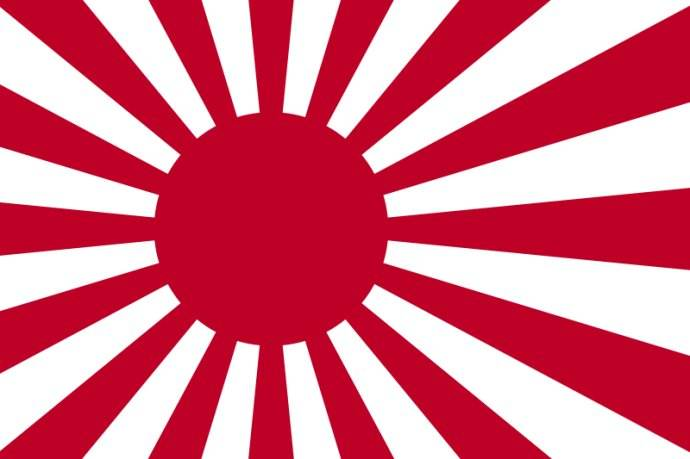
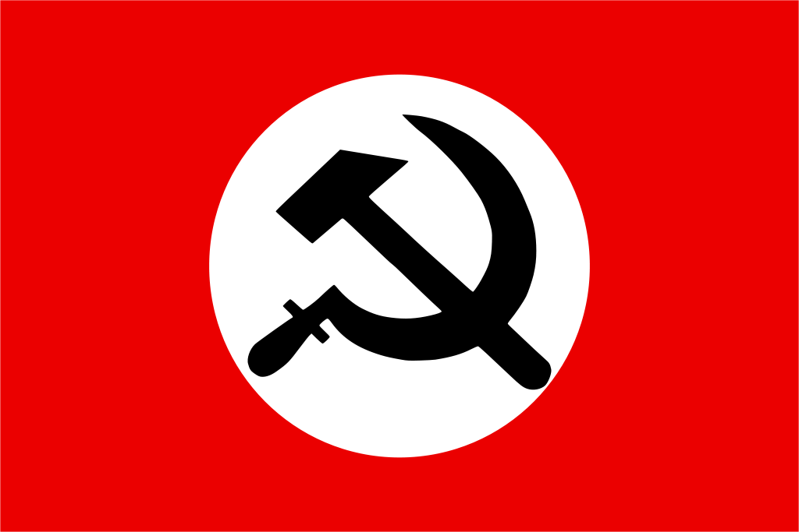

回复
抛砖引玉，自己先「设计」了一个。作为外行，只能通过截图拼凑，见笑。
各位感觉怎么样？希望设计行业的朋友们帮忙修改润色一下，谢谢大家。
简单说，旧日本海军「旭日旗」是这样的：
 旭日旗 而当代罗刹被官方查禁的「国家布尔什维克党」的党旗是这样的：
 国家布尔什维克党 还有个政治很不正确的三德子党旗就不贴了……
所以惦记着把它们结合起来，反转旭日旗配色之后在中间填上镰刀榔头……以便在「架空」背景当中用来衬托反派。
除此之外，还有什么拼凑的设计能实现「一幅图惹毛几乎所有人」的目标呢？
抛砖引玉，自己先「设计」了一个。作为外行，只能通过截图拼凑，见笑。
各位感觉怎么样？希望设计行业的朋友们帮忙修改润色一下，谢谢大家。